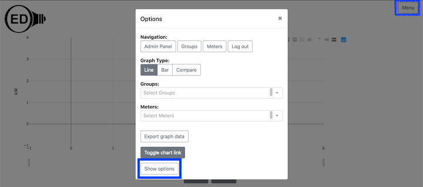

<div class="row">
	{% include_relative _version %}
	{% include help-sidebar OEDVersion=OEDVersion %}
	<div class="medium-8 medium-pull-4 columns" markdown="1">

		<h2 id="overview">Overview</h2>
		<p>There are times you want to have more space for graphics by docking the options/menus normally listed on the
			left-hand side of the OED pages. This may be desired when you have a smaller screen/resolution, you are
			displaying on a monitor without interactivity or you simply want more space for the graphics. When you dock
			these items, they can be undocked from the "Menu" button on the top, right corner of the OED screen where
			there
			is an option to undock the options/menus.</p>

		<h2 id="usage">Usage</h2>
		<p>OED will automatically dock the menus if the size of your web browser window is too small. This can happen
			due to
			resizing the window or from the screen resolution/size. If you wish to manually dock the options/menus, then
			use
			the "Hide options" button (highlighted in blue box) as shown in this figure:</p>
		
		<p>When this is done, the screen will change as shown in the figure below (without the popup shown). The figure
			below shows clicking on the
			"Menu" button in the top, right corner of the window (highlighted in light blue box) and the popup shown
			appears when you do
			this. The "Show options" button (highlighted in blue box) on the popup can be clicked to undock the
			options/menus to put them back on the left side of the window as shown in the figure above.</p>
		

		<h2 id="details">Details</h2>
		<p>The "Toggle chart link" button has an option to hide the menu when you create the link. See the <a
				href="../chartLink/">chart link page</a> for more information.</p>
	</div>
</div>
